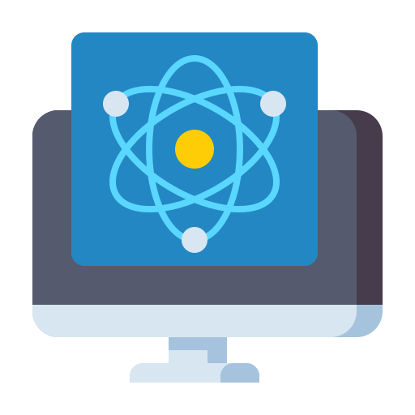
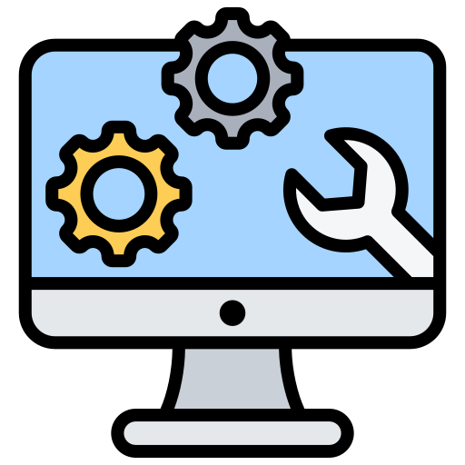

Thème 1 : 3D!

Veille informatique
__________________________________________________________________________________________________________________________________________________________________________
Thème 1 : 3D!
La 3D est un thème qui m'intéresse beaucoup, j'aime pouvoir modéliser la réalité, ou pouvoir créér son propre monde !
De plus, c'est une compétence particulière que j'ai acquérit grâce à mon travail, que je pourrais exploiter pour mon parcours professionnel !
Il faut donc que je me tienne informé des dernières nouvelles !
Mes articles sur la 3D__________________________________________________________________________________________________________________________________________________________________________
Thème 2 : Informatique Quantique
L'informatique quantique est l'avenir de l'informatique !
Puisque j'aime la physique, je tiens à comprendre l'évolution de ce domaine !
Mes articles sur l'informatique quantique__________________________________________________________________________________________________________________________________________________________________________
Thème 3 : Nouveaux outils
En tant que développeuse web, je dois me munir des meilleurs outils pour être la plus efficace possible !
Mes articles sur les nouveaux outils__________________________________________________________________________________________________________________________________________________________________________
Thème 4 : Bonnes pratiques
Je suis soucieuse de produire un code de qualité, efficace, mais aussi relisible par d'autres développeurs.
Je dois donc adopter les bonnes pratiques !
Mes articles sur les bonnes pratiques